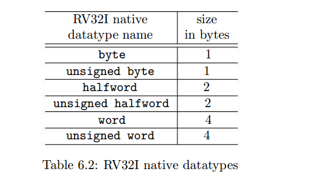
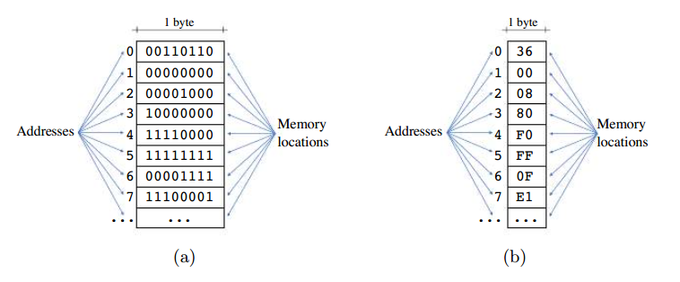
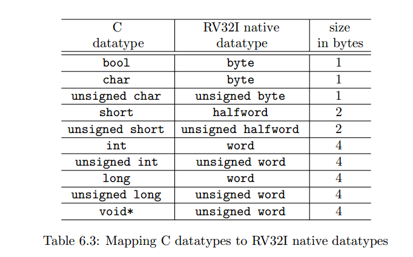
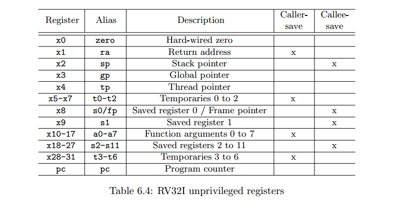
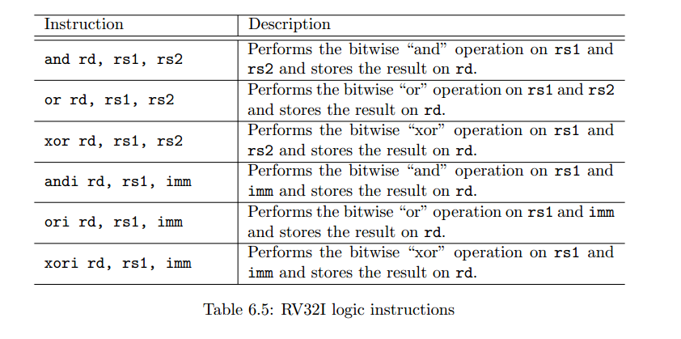

The RV32I ISA
Đặc tính
Không gian địa chỉ 32 bit: Điều này có nghĩa là kiến trúc được thiết kế để làm việc với các địa chỉ bộ nhớ có độ dài 32 bit. Điều này giới hạn bộ nhớ có thể truy cập được là 2^32 (4 gigabyte) bộ nhớ.
Ba mươi ba thanh ghi 32 bit: Các thanh ghi là các vị trí lưu trữ nhỏ trong bộ xử lý giữ các giá trị tạm thời và dữ liệu trung gian trong quá trình thực thi chương trình. Kiến trúc RV32IM có 33 thanh ghi 32 bit.
Đại diện cho các giá trị số nguyên có dấu bằng phương pháp bù hai: Phương pháp biểu diễn giá trị số nguyên có dấu bằng phương pháp bù hai là một cách thức phổ biến để biểu diễn các số âm trong máy tính.
Các hướng dẫn cơ bản: Bao gồm các hướng dẫn tính toán số nguyên, các hướng dẫn nạp và lưu trữ số nguyên và các hướng dẫn điều khiển luồng.
Hướng dẫn nhân và chia: Kiến trúc này cũng bao gồm các hướng dẫn để nhân và chia các giá trị được lưu trữ trong các thanh ghi số nguyên (phần mở rộng M).
Datatype
RISC-V được thiết kế để làm việc với các byte địa chỉ, bộ nhớ. Mỗi địa chỉ lưu trong 1 byte và là 1 address duy nhất.
Khi lưu trữ một giá trị kiểu halfword, các byte tương ứng sẽ được lưu trữ trên nhiều vị trí bộ nhớ liên tiếp nhau.
Ví dụ, khi lưu trữ một giá trị kiểu halfword (word) trong bộ nhớ, hai (bốn) byte sẽ được lưu trữ trên hai (bốn) vị trí bộ nhớ liên tiếp.
Khi dịch một chương trình được viết bằng “C” sang mã hợp ngữ RV32I, các kiểu dữ liệu trong “C” phải được chuyển đổi thành các kiểu dữ liệu cơ bản của RISC-V. Bảng dưới mô tả các ánh xạ từ các kiểu dữ liệu cơ bản của “C” sang các kiểu dữ liệu cơ bản của RV32I. Tất cả các con trỏ trong “C” (ví dụ: int*, char*, và void*) đại diện cho các địa chỉ bộ nhớ và được ánh xạ sang kiểu dữ liệu từ dương.
RV32I register
ISA không đặc quyền RV32I chứa ba mươi ba thanh ghi 32-bit, còn được gọi là các thanh ghi không đặc quyền. Trong đó:
Thanh ghi x0: Là một thanh ghi đặc biệt được kết nối cứng với giá trị không, tức là luôn trả về giá trị không khi đọc.
Thanh ghi pc: Chứa bộ đếm chương trình, tức là địa chỉ của lệnh tiếp theo sẽ được thực thi. Nội dung của thanh ghi này được tự động cập nhật mỗi khi một lệnh được thực thi và có thể được cập nhật bởi các lệnh đặc biệt gọi là lệnh điều khiển luồng.
Các thanh ghi còn lại (x1-x31): Là các thanh ghi tổng quát và có thể được sử dụng thay thế cho nhau. Tuy nhiên, thường quan trọng khi phải tuân thủ một tiêu chuẩn sử dụng thanh ghi. Ví dụ, luôn sử dụng cùng một tập hợp các thanh ghi để truyền các tham số khi gọi một hàm. Để giúp cho việc lập trình dễ dàng hơn, các thanh ghi này được đặt tên viết tắt (alias), có thể được sử dụng khi viết mã hợp ngữ. Mục tiêu là cho phép người lập trình sử dụng các tên thanh ghi có ý nghĩa hơn khi lập trình. Ví dụ, viết a0 thay vì x10 để chỉ thanh ghi chứa đối số đầu tiên của một hàm.
Load/Store architecture
Một kiến trúc Load/Store là một kiến trúc tập lệnh yêu cầu các giá trị phải được tải/lưu trữ một cách rõ ràng từ/đến bộ nhớ trước khi thực hiện các thao tác trên chúng. Nói cách khác, để đọc/ghi một giá trị từ/đến bộ nhớ, phần mềm phải thực thi một lệnh tải/lưu trữ.
RISC-V là một kiến trúc Load/Store, do đó, để thực hiện các thao tác (ví dụ, các thao tác toán học) trên dữ liệu được lưu trữ trong bộ nhớ, nó yêu cầu dữ liệu phải được trước tiên lấy từ bộ nhớ vào một thanh ghi bằng cách thực thi một lệnh tải.
ví dụ:
lw a5, 0(a0)
add a6, a5, a5
sw a6, 0(a0)
Lệnh đầu tiên, gọi là lệnh tải từ (load word) và được chỉ định bằng ký hiệu lw, là một lệnh tải. Nó lấy một giá trị từ bộ nhớ và lưu nó vào thanh ghi a5. Biểu thức 0(a0) chỉ định địa chỉ của vị trí bộ nhớ lưu trữ giá trị cần tải. Trong trường hợp này, địa chỉ là tổng của nội dung của thanh ghi a0 và hằng số 0. Nói cách khác, nếu thanh ghi a0 chứa giá trị 8000 khi lệnh tải này được thực thi, phần cứng sẽ lấy dữ liệu từ vị trí bộ nhớ liên kết với địa chỉ 8000.
Lệnh thứ hai, được chỉ định bằng ký hiệu add, cộng hai giá trị và lưu kết quả vào một thanh ghi. Trong trường hợp này, nó đang thêm các giá trị từ các thanh ghi a5 và a5 và lưu kết quả vào thanh ghi a6. Lưu ý rằng, vì cả hai toán hạng nguồn đều giống nhau, tức là a5, kết quả tương đương với việc nhân nội dung của a5 với hai.
Cuối cùng, lệnh thứ ba, gọi là lệnh lưu từ (store word) và được chỉ định bằng ký hiệu sw, lưu giá trị từ thanh ghi a6 vào bộ nhớ. Một lần nữa, biểu thức 0(a0) chỉ định địa chỉ của vị trí bộ nhớ sẽ nhận dữ liệu.
Pseudo-instructions
Khi lập trình một chương trình hợp ngữ, trình biên dịch chuyển đổi mỗi lệnh hợp ngữ
(được mã hóa dưới dạng văn bản thô) thành lệnh máy tương ứng (được mã hóa dưới dạng nhị phân).
Ví dụ, lệnh hợp ngữ add x10, x11, x12 được chuyển đổi thành lệnh máy tương ứng của nó, được
mã hóa bằng bốn byte là 0x00c58533.
Một pseudo-lệnh là một lệnh hợp ngữ không có một lệnh máy tương ứng trên vi xử lý, nhưng có
thể được trình biên dịch tự động chuyển đổi thành một hoặc nhiều lệnh máy thay thế để đạt được
cùng một hiệu ứng. Ví dụ, lệnh không làm gì, hoặc “nop”, là một pseudo-lệnh RV32I được chuyển
đổi bởi trình biên dịch thành lệnh “addi x0, x0, 0”. Một ví dụ khác là lệnh “mv”, mà sao chép
nội dung của một thanh ghi vào một thanh ghi khác. Trong trường hợp này, pseudo-lệnh “mv a5, a7”,
sao chép nội dung của a7 vào a5, được chuyển đổi thành lệnh “addi a5, a7, 0”, thêm số không vào giá
trị trong a7 và lưu kết quả vào thanh ghi a5.
Vì sách tập trung vào lập trình hợp ngữ, phần còn lại của sách này sẽ không phân biệt pseudo-lệnh với các lệnh máy thực sự của RV32I. Chúng tôi đề nghị người đọc tham khảo “RISC-V Instruction Set Manual” [4] để có danh sách đầy đủ các lệnh máy thực sự và pseudo-lệnh của RV32I.
Logic, shift, and arithmetic instructions
Instructions syntax and operands
Trong kiến trúc RV32I của RISC-V, các lệnh logic (ví dụ: and, or), dịch (ví dụ: dịch trái, dịch phải) và toán học (ví dụ: cộng, trừ) hoạt động trên dữ liệu được chỉ định bởi các toán hạng của lệnh. Mỗi lệnh này bao gồm ba phần: một thanh ghi đích, và hai toán hạng nguồn.
Thanh ghi đích (rd): Đây là thanh ghi mà kết quả của phép tính sẽ được lưu trữ.
Toán hạng nguồn thứ nhất (rs1): Đây là thanh ghi chứa dữ liệu đầu tiên mà lệnh sẽ thao tác.
Toán hạng nguồn thứ hai (rs2 hoặc imm): Đây là thanh ghi thứ hai hoặc một giá trị ngay lập tức. Nó chứa dữ liệu thứ hai mà lệnh sẽ sử dụng trong phép tính.
Cú pháp của các lệnh logic, dịch và toán học có thể là:
MNM rd, rs1, rs2
MNM rd, rs1, imm
Ở đây, “MNM” là mã lệnh, “rd” là thanh ghi đích, “rs1” là toán hạng nguồn thứ nhất và “rs2” (hoặc “imm”) là toán hạng thứ hai.
Ví dụ, hãy xem xét các lệnh sau:
and a0, a2, a6: Lệnh này thực hiện phép toán “and” bit trên các giá trị từ a2 và a6, sau đó lưu kết quả vào a0.
slli a1, a3, 2: Lệnh này dịch giá trị từ a3 sang trái hai lần và lưu kết quả vào a1.
sub a4, a5, a6: Lệnh này trừ giá trị tại a6 từ giá trị tại a5 và lưu kết quả vào a4. (a4=a5-a6)
Bất kỳ thanh ghi nào trong tất cả các thanh ghi tổng quát (x0-x31) đều có thể được sử dụng như là rd, rs1 hoặc rs2. Tuy nhiên,
nếu x0 (zero) được sử dụng làm thanh ghi đích, thì kết quả sẽ bị bỏ qua vì x0 luôn luôn được kết nối cứng với giá trị không.
Dealing with large immediate values
Trong RISC-V, cách khuyến nghị để tải các giá trị ngay lập tức vào các thanh ghi là bằng cách sử dụng pseudo-lệnh “load immediate”, hoặc li. Pseudo-lệnh này sẽ tự động được chuyển đổi bởi trình biên dịch thành chuỗi lệnh máy tốt nhất để tạo ra giá trị mong muốn. Cú pháp của lệnh load immediate là:
li rd, imm
ở đó, rd chỉ ra thanh ghi đích và imm là giá trị ngay lập tức mong muốn.
Giá trị ngay lập tức là một hằng số được mã hóa trực tiếp vào lệnh. Ngoài giá trị này, lệnh cũng phải mã hóa các thông tin khác như mã lệnh và các toán hạng khác. Vì tất cả các lệnh RV32I đều có đúng 32 bit, số lượng bit có sẵn để mã hóa giá trị ngay lập tức nhỏ hơn 32 bit. Trong thực tế, các lệnh toán học, logic và dịch của RV32I chỉ có thể mã hóa các giá trị ngay lập tức có thể được biểu diễn dưới dạng một số nguyên 12 bit trong hệ số nhị phân bù hai. Nói cách khác, các giá trị ngay lập tức được sử dụng như các toán hạng trên các lệnh này phải lớn hơn hoặc bằng -2048 và nhỏ hơn hoặc bằng 2047.
Ví dụ, các lệnh sau đây là không hợp lệ:
add a0, a5, 2048
add a0, a5, 10000
add a0, a5, -3000
Chúng không hợp lệ vì trình biên dịch không thể mã hóa các giá trị ngay lập tức vào lệnh (lưu ý rằng chúng có thể không được mã hóa dưới dạng số nguyên 12 bit trong hệ số nhị phân bù hai). Trong ví dụ này, trình biên dịch sẽ thất bại khi biên dịch mã và có thể hiển thị một thông báo lỗi.
Để thực hiện các phép toán với các giá trị ngay lập tức nhỏ hơn -2048 hoặc lớn hơn 2047, người lập trình có thể sử dụng nhiều lệnh để tạo ra giá trị, lưu trữ nó vào một thanh ghi và sử dụng một lệnh mà đọc toán hạng thứ hai từ một thanh ghi.
Giả sử chúng ta muốn thực hiện phép cộng với một giá trị ngay lập tức lớn hơn 2047, ví dụ như 3000. Nhưng nhớ rằng, trong kiến trúc RV32I, lệnh chỉ có thể mã hóa giá trị ngay lập tức từ -2048 đến 2047.
Để thực hiện điều này, chúng ta có thể sử dụng nhiều lệnh để tạo ra giá trị 3000, sau đó thực hiện phép cộng với nó.
Dưới đây là cách làm:
Load một giá trị nhỏ hơn, chẳng hạn là 1000, vào một thanh ghi. Dịch giá trị này sang trái hai lần để nhân nó với 4, từ đó ta có giá trị 4000. Thêm một số nguyên khác vào giá trị này để đạt được giá trị cuối cùng là 3000. Dưới đây là mã hợp ngữ cho việc thực hiện điều này:
ADD a5, x0, 1000 # Load giá trị 1000 vào thanh ghi a5
SLLI a5, a5, 2 # Dịch trái giá trị trong a5 hai lần
ADDI a5, a5, 1000 # Thêm 1000 vào giá trị trong a5 để đạt được 3000
Kết quả của các lệnh này là giá trị 3000 sẽ được lưu vào thanh ghi a5, và sau đó chúng ta có thể sử dụng giá trị này để thực hiện phép cộng với bất kỳ thanh ghi nào khác như sau:
ADD a0, a0, a5 # Thực hiện phép cộng giữa giá trị trong a0 và 3000, kết quả được lưu vào a0
Như vậy, chúng ta đã thực hiện phép cộng với một giá trị ngay lập tức lớn hơn 2047 bằng cách sử dụng nhiều lệnh để tạo ra giá trị này và sau đó thực hiện phép cộng với nó.
Logic instructions
Lệnh and/or/xor thực hiện phép toán bit “and”/”or”/”xor” trên các giá trị được lưu trong các thanh ghi rs1 và rs2, và kết quả được lưu vào thanh ghi rd. Còn các lệnh andi/ori/xori thực hiện phép toán sử dụng giá trị được lưu trong thanh ghi rs1 và một giá trị ngay lập tức.
ví dụ
and a0, a2, s2 # a0 <= a2 & s2
or a1, a3, s2 # a1 <= a3 | s2
xor a2, a2, a1 # a2 <= a2 ^ a1
andi a0, a2, 3 # a0 <= a2 & 3
ori a1, a3, 4 # a1 <= a3 | 4
xori a2, a2, 1 # a2 <= a2 ^ 1
li a1, 0xFE01AB23 # a1 <= 0xFE01AB23
li a2, 0x0000FF00 # a2 <= 0x0000FF00
and a0, a1, a2 # a0 <= a1 & a2
Shift instructions
Dịch chuyển được sử dụng để dịch các giá trị nhị phân sang trái hoặc sang phải. Các lệnh này có thể được sử dụng để đóng gói hoặc giải nén các bit thành từ hoặc để thực hiện các phép nhân và chia.
Trong kiến trúc RV32I, có nhiều loại lệnh dịch khác nhau:
sll rd, rs1, rs2: Thực hiện một dịch trái logic trên giá trị ở thanh ghi rs1 và lưu kết
quả vào thanh ghi rd. Số lần dịch trái được xác định bởi giá trị trong thanh ghi rs2.
srl rd, rs1, rs2: Thực hiện một dịch phải logic trên giá trị ở thanh ghi rs1 và lưu kết
quả vào thanh ghi rd. Số lần dịch phải được xác định bởi giá trị trong thanh ghi rs2.
sra rd, rs1, rs2: Thực hiện một dịch phải số học trên giá trị ở thanh ghi rs1 và lưu kết
quả vào thanh ghi rd. Số lần dịch phải được xác định bởi giá trị trong thanh ghi rs2.
slli rd, rs1, imm: Thực hiện một dịch trái logic trên giá trị ở thanh ghi rs1 và lưu kết
quả vào thanh ghi rd. Số lần dịch trái được xác định bởi giá trị ngay lập tức imm.
srli rd, rs1, imm: Thực hiện một dịch phải logic trên giá trị ở thanh ghi rs1 và lưu kết
quả vào thanh ghi rd. Số lần dịch phải được xác định bởi giá trị ngay lập tức imm.
srai rd, rs1, imm: Thực hiện một dịch phải số học trên giá trị ở thanh ghi rs1 ``và lưu kết
quả vào thanh ghi ``rd. Số lần dịch phải được xác định bởi giá trị ngay lập tức imm.
Các lệnh dịch này được sử dụng để di chuyển các bit của giá trị từ rs1 sang trái hoặc sang phải, tùy thuộc vào loại lệnh được sử dụng. Dịch trái và dịch phải logic thêm hoặc loại bỏ các bit ở phía trái hoặc phải của giá trị mà không thay đổi dấu, trong khi dịch phải số học giữ nguyên dấu của giá trị. Điều này có thể được sử dụng để nhân hoặc chia một số nguyên với một lũy thừa của hai.
Phép dịch phải logic chỉ có thể được sử dụng để chia các số không dấu. Trong trường hợp này, việc dịch một số không dấu N lần sang phải với phép dịch phải logic tương đương với việc chia số không dấu đó cho 2^N.
Phép dịch phải số học là một loại phép dịch bit được sử dụng trong lập trình máy tính, đặc biệt trong việc xử lý các số nguyên có dấu. Khi thực hiện phép dịch phải số học trên một số nguyên, các bit của số này sẽ được dịch sang phải một số lần chỉ định, và bit trái nhất sẽ được sao chép lại vào các vị trí mới xuất hiện từ phía trái. Điều này giữ nguyên dấu của số khi thực hiện dịch phải.
Cụ thể, nếu bit trái nhất của số là 1 (tức là số âm), thì sau phép dịch phải số học, các bit được thêm vào bên trái sẽ là 1. Ngược lại, nếu bit trái nhất của số là 0 (tức là số dương), thì các bit được thêm vào sẽ là 0.
Phép dịch phải số học có thể được sử dụng để thực hiện các phép chia số nguyên cho các lũy thừa của 2. Điều này bởi vì mỗi lần dịch phải số học một lần tương đương với việc chia số nguyên cho 2.
Trong ngôn ngữ lập trình và kiến trúc máy tính, các lệnh dịch phải số học thường được cung cấp để hỗ trợ các phép toán trên số nguyên có dấu.
Arithmetic instructions
add rd, rs1, rs2: Thêm các giá trị trong rs1 và rs2 ``và lưu kết quả vào ``rd.
sub rd, rs1, rs2: Trừ giá trị trong rs2 từ giá trị trong rs1 và lưu kết quả vào rd.
addi rd, rs1, imm: Thêm giá trị trong rs1 với giá trị ngay lập tức imm và lưu kết quả vào rd.
mul rd, rs1, rs2: Nhân các giá trị trong rs1 ``và ``rs2 và lưu kết quả vào rd.
div{u} rd, rs1, rs2: Chia giá trị trong rs1 ``cho giá trị trong ``rs2 và lưu kết quả vào rd.
Hậu tố U ``là tùy chọn và phải được sử dụng để chỉ ra rằng các giá trị trong ``rs1 và rs2 là không dấu.
rem{u} rd, rs1, rs2: Tính phần dư của phép chia giá trị trong rs1 cho giá trị trong rs2 và lưu kết
quả vào rd.
Các hướng dẫn add (add và addi) thêm hai số và lưu kết quả vào một thanh ghi (rd). Trong cả hai trường
hợp, số đầu tiên được lấy từ thanh ghi rs1. Hướng dẫn add lấy số thứ hai từ thanh ghi rs2 trong khi hướng
dẫn addi sử dụng giá trị ngay lập tức imm.
Hướng dẫn sub trừ giá trị trong rs2 từ giá trị trong rs1 ``và lưu kết quả vào ``rd. RV32I không chứa hướng dẫn
subi, tức là một hướng dẫn trừ giá trị ngay lập tức từ nội dung của một thanh ghi và lưu kết quả vào một
thanh ghi khác. Tuy nhiên, một lập trình viên có thể dễ dàng đạt được hiệu ứng này bằng cách thêm một giá
trị ngay lập tức âm bằng cách sử dụng hướng dẫn addi.
Hướng dẫn mul nhân các giá trị trong rs1 và rs2 và lưu kết quả vào rd.
Hướng dẫn div và divu ``chia giá trị trong rs1 cho giá trị trong ``rs2 và lưu kết quả vào rd. Hướng
dẫn div chia các số có dấu trong khi hướng dẫn divu chia các số không dấu.
Hướng dẫn rem và remu tính phần dư của phép chia giá trị trong rs1 cho giá trị trong rs2 và lưu
kết quả vào rd . Hướng dẫn rem tính phần dư cho phép chia của các số có dấu trong khi hướng dẫn remu
tính phần dư cho phép chia của các số không dấu.
Ví dụ
add a0, a2, t2 # a0 <= a2 + t2
addi a0, a2, 10 # a0 <= a2 + 10
sub a1, t3, a0 # a1 <= t3 - a0
mul a0, a1, a2 # a0 <= a1 * a2
div a1, a3, a5 # a1 <= a3 / a5
rem a1, a3, a5 # a1 <= a3 % a5
remu a1, a3, a5 # a1 <= a3 % a5
Trong trường hợp bạn lập trình cho một RV32I không có phần mở rộng M,
tức là không chứa các hướng dẫn nhân và chia, bạn có thể kết hợp các hướng dẫn số học và
dịch để thực hiện các phép nhân và chia. Mã lệnh hợp ngữ dưới đây cho thấy một ví dụ về
cách sử dụng các hướng dẫn slli và addi để nhân giá trị của a2 với 5 và với 10:
slli a0, a2, 2 # a0 <= a2 * 4
add a0, a0, a2 # a0 <= a0 + a2, tức là a2 * 5
slli a1, a0, 1 # a1 <= a0 * 2, tức là a2 * 10
Data movement instructions
Câu lệnh addi sp, sp, -16 thường được sử dụng để cấp phát không gian trong ngăn xếp (stack) cho các biến cục bộ hoặc cho frame của một hàm trong MIPS Assembly Language. Cụ thể, tác dụng của câu lệnh này là:
Cấp phát không gian cho biến cục bộ: Khi một hàm được gọi, các biến cục bộ của hàm đó thường được cấp phát không gian trong ngăn xếp. Việc giảm giá trị của sp bằng 16 (trong trường hợp này) sẽ mở rộng ngăn xếp để chứa các biến cục bộ và các giá trị khác liên quan đến việc thực thi hàm.
Cấp phát frame cho một hàm: Trong MIPS, khi một hàm được gọi, một frame mới được tạo ra trên ngăn xếp để lưu trữ các biến cục bộ và các giá trị trả về. Câu lệnh addi sp, sp, -16 có thể được sử dụng để tạo ra một frame mới cho hàm đó, bằng cách giảm giá trị của sp để cấp phát không gian mới trong ngăn xếp.
Tóm lại, câu lệnh này thường được sử dụng để quản lý việc cấp phát không gian trong ngăn xếp, đặc biệt là cho các biến cục bộ và các frame của các hàm trong chương trình MIPS.